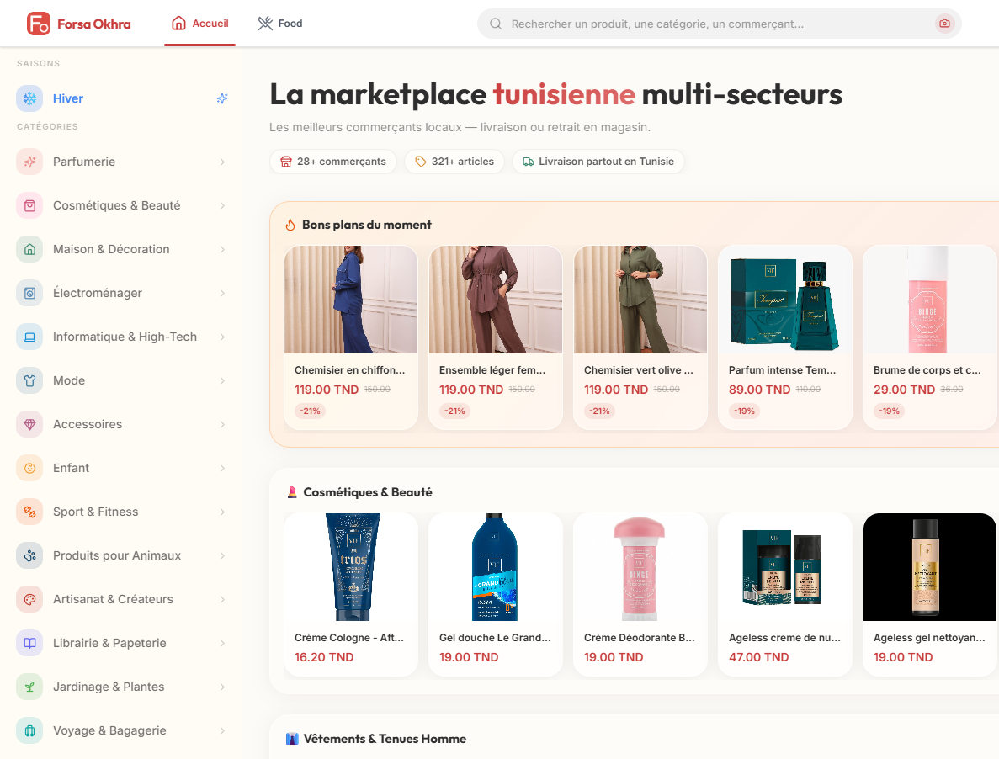
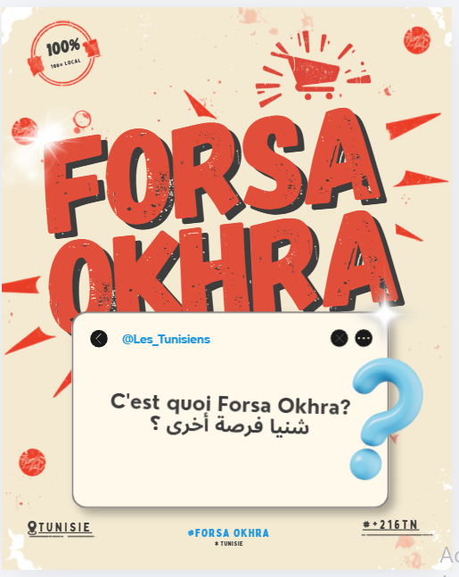
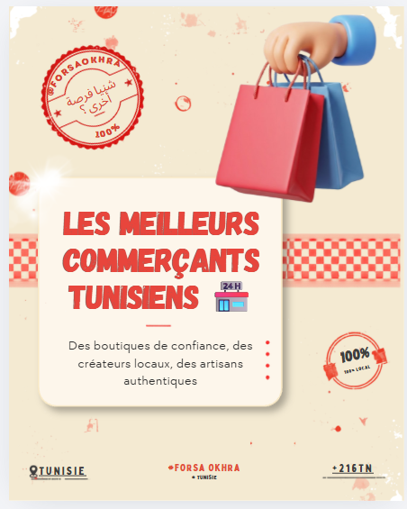
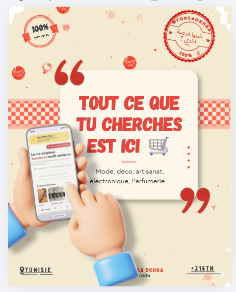

Web & digital
Concevoir et développer des expériences web, de l’idée à la mise en ligne.
DESIGN · DEVELOPMENTCRÉER · CODER · IMAGINER
Étudiante en Ingénierie des Données et Systèmes Décisionnels (IDSD), fondatrice de Forsa Okhra ( site e-commerce) , développeuse web, créatrice de contenus IA, monteuse vidéo et artiste. Je transforme des idées en projets digitaux et en créations visuelles.

04 — OUTILS & SAVOIR-FAIRE
D / 04J’aime apprendre en faisant. Voici les domaines que j’explore et que je développe à travers mes projets.
Clique sur une compétence pour afficher les projets et créations associés dans ma galerie.
Ajoute ou ajuste les technologies et outils précis que tu utilises réellement avant publication.
UN ESPRIT CURIEUX, PLUSIEURS FAÇONS DE CRÉER.
✳Toujours en train d’apprendre.
01 — QUI SUIS-JE ?
A / 01J’aime donner vie aux idées — qu’elles prennent la forme d’un site web, d’un agent intelligent, d’une vidéo générée par IA ou d’un tableau peint à la main.
Je suis étudiante en deuxième année IDSD à l’ENET’Com de Sfax. En parallèle de mes études, je développe mes propres projets, j’explore les outils d’intelligence artificielle et je crée des œuvres artistiques que je partage et commercialise.
À l’ENET’Com, IDSD signifie Ingénierie des Données et Systèmes Décisionnels : une formation orientée vers les données, les bases de données, l’informatique décisionnelle et les systèmes qui aident à analyser l’information et à prendre des décisions.
Concevoir et développer des expériences web, de l’idée à la mise en ligne.
DESIGN · DEVELOPMENTCréer des visuels, vidéos, affiches et agents intelligents pour donner forme aux idées.
GENERATIVE AI · AUTOMATIONExplorer les couleurs, les textures et les émotions à travers des œuvres originales.
PAINTING · VISUAL STORYTELLINGTransformer une idée en projet concret : stratégie, échanges, communication et ventes.
IDEATION · BUSINESS02 — SÉLECTION DE PROJETS
B / 02De la première intuition à l’expérience finale, j’aime explorer chaque étape du processus créatif.

Un projet e-commerce imaginé et construit de A à Z. J’ai porté le projet de l’idée au lancement : développement du site, exploration d’agents intelligents, échanges avec les commerçants, communication et ventes.
Visiter le projetProjet personnel · Conception, développement et activité commerciale

Des univers visuels imaginés, générés et affinés à l’aide d’outils IA.
Voir la galerie ↘
Des compositions visuelles conçues pour raconter une idée et capter l’attention.
Voir la galerie ↘
Des compositions visuelles conçues pour raconter une idée et capter l’attention.
Voir la galerie ↘
Des compositions visuelles conçues pour raconter une idée et capter l’attention.
Voir la galerie ↘03 — LABORATOIRE CRÉATIF
C / 03Un aperçu de mon terrain de jeu visuel. Remplace les espaces réservés par tes propres créations.
✳ Découvre mes créations sur : ↗ zainebs-palette
04 — VIDÉOS & MONTAGES
V / 04Montages vidéo, créations générées par IA et contenus promotionnels. Les vidéos se regardent directement ici.
Montage et narration visuelle.
Montage et narration visuelle.
Des concepts visuels transformés en séquences animées.
Vidéo promotionnelle pour présenter un produit.
Format court pensé pour présenter un produit ou une idée.
05 — FORMATION & PARCOURS
E / 05Deuxième année — IDSD
Sfax, Tunisie. Un parcours en informatique que je complète par des projets personnels, des expérimentations créatives et une expérience entrepreneuriale concrète.
06 — ET SI ON CRÉAIT ENSEMBLE ?
Un projet digital, une collaboration créative ou simplement envie d’échanger ? Ma boîte mail est ouverte.
kaanichezayneb@gmail.com ↗Remplace cette adresse par ton adresse e-mail réelle.